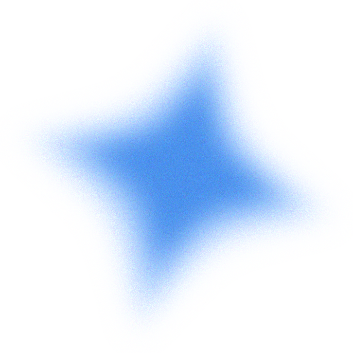

Rusty Blackbird is one of North America’s most rapidly declining species. The population has plunged an estimated 85-99 percent over the past forty years and scientists are completely puzzled as to what is the cause. They are relatively uncommon denizens of wooded swamps, breeding in the boreal forest and wintering in the eastern U.S. In winter, they travel in small flocks and are identified by their distinctive rusty featheredges and pallid yellow eyes.
In summer, mostly insects; in winter, acorns, pine seeds, and fruit..
Breeds in wet forests, including areas with fens, bogs, muskeg, and beaver ponds. Winters in swamps, wet woodlands, and pond edges.
Bulky bowl with an outer layer of twigs, grass, and lichens. Wet, rotting plant matter is placed in this outer layer, then dries and hardens. Placed in trees and shrubs, near water.